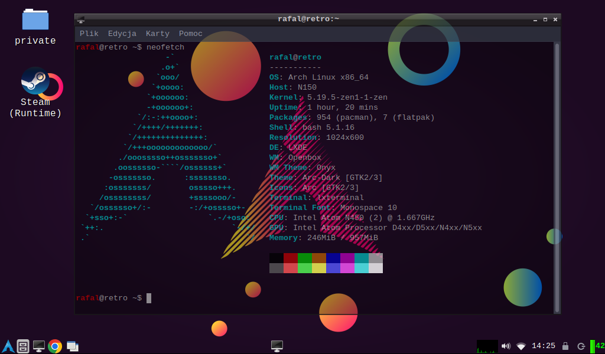

Aby zobaczyć 100% zawartoćci strony włącz JavaScript w swojej przegladarce!!!!
Witaj na stronie!
Na tej stronie dowiesz się więcej o różnych moich projektach.
Dowiesz się także sporo informacji na temat mojego setupie linuxowym oraz o nauce tego systemu.
O mnie, czyli moje zainteresowania :)
Moja jedna z pasji, czyli Linux i programowanie:
Nie był bym sobą, kiedy bym nie powiedział o tym.
Uwielbiam programować w przeróżnych językach (np. ta strona jest stworzona przeze mnie).
Lubię też "kombinować" z systemem Linux ale o tym jeszcze kiedyś indziej :).
Na świeżym powietrzu, czyli Rower:
Bardzo lubię też jazdę na rowerze.
Najcześciej jeżdzę po mieście i w jego okolicach.
Poniżej można zobaczyć jedne z ciekawszych fotografi :)


Coś kreatywnego, czyli klocki LEGO i książki:
LEGO
Od kiedy pamiętam lubiłem układać klocki LEGO.
Nie układam z zestawów, ale najcześciej z wyobrażni.
Poniżej liczba PI z klocków LEGO :)

Książki
Lubię także czytać różnego rodzaju książki :)
Obecnie czytam Harry'ego Potter'a, a niedawno preczytałem "Za duży na bajki".
Nic to nic :)
RPG CLICKER
RPG CLICKER to prosty clicker nie mający niestety elementów rpg xD.
Projekt był realizowany z użytkownikami discorda, moimi kolegami: aSzumiaczek#2587, Fracix#0533, MMP#7899.
Projekt został porzucony ze względu na brak motywacji :(
Gra do pobrania na TEJ STRONIE
In Computer
In Computer to prosta platformówka nad którą pracuję... Więcej wkrótce...
Cholipka! Clicker
Prosty Clicker w Unity
Projekt został porzucony ze względu na brak sił do uporywania się z max int'em
Moim linuxem obecnie jest...
Arch Linux
Pewnie się zapytacie czemu?
Odpowiedź jest prosta, Arch Linux daje mi dużo wolności i swowody, dodatkowo jest szybki i zadziała na każdym sprzęcie a powyżej jest na to żywy dowód.
Jakiego Desktopu używam?
Jak widać używam LXDE, jest najszybsze i najlepsze dla arhaicznych sprzętów ale i dla najnowszych PC'tów z RTX'xami. Wodotrysków nie ma, ale każdy kto ceni wydajność i stabilność to zrozumie.
Korzystam także z KDE Plasmy, ale na mocniejszej konfiguracji niż powyżej.
Pewnie ktoś powie "I3 lżejszy"...
Rozwiewam wątpliwości:
I3 jest lżejszy tak naprawdę tylko przy dedykowanych kartach graficznych, zużywa mniej ramu itp.
Na integrze nie ma różnicy wydajnościowej między I3 a LXDE, według mnie.
Moja ścieżka Linuxa:
Ubuntu -> Lubuntu -> Debian(LXDE) -> Lubuntu -> Fedora(LXDE) -> Debian(LXDE) -> Arch Linux(LXDE)
Jak nauczyłem się Linuxa?
Google, Google i jeszcze raz Google!
Aby nauczyć się Linuxa wystarczy umiejętność korzystania z Googla czy innej wyszukiwarki internetowej.
TYLE...
Mając chęci i sporo czasu można bezproblemowo nauczyć się obsługi Linuxa, poznać wady różnych dystrybucji oraz ich zalety
Od czego zacząć? Jaka dystrybucja na start?
Według mnie, przesiadając się z Windowsa najlepsze będzie Kubuntu, Xubuntu bądź Lubuntu
Jeśli nie wiesz jak je zainstalować wystarczy wygooglować: "*nazwa dystrybucji* install"
Jeśli nie chcesz instalować możesz z pendriva przetestować daną dystrybucję i dowiedzieć się czy będzie ci odpowiadać
Polecane źródła wiedzy:
Youtube a w szczególności, na starcie polecam kanały polsko języczne jeśli nie rozumiecie za bardzo angielskiego (ale i tak będziecie zmuszeni się go lekko poduczyć :]). Polecam w szczególności m.in Świat Linuxa, a dla osób lubiący humor wybrane odcinki Sapera Elektrozłomiarza.
Jeśli ogarniasz angielski albo umiesz korzystać z Google Translate polecam Wiki. Można tam znaleść sporo informacji.
Według mnie to najlepsze źródła na start, w razie problemów polecam wygooglowanie go i skorzystanie z Reddita czy innego forum.
Cele Projektu
Projekt ma na celu archiwizację materiałów edukacyjnych (notatek) z języka polskiego (i nie tylko) w celu przygotowania się do matury.
Autorzy projektu
Ja :). Dziękuję także mojej nauczycielce języka polskiego za naukę i pomoc w utworzeniu notatek.
Pierwsza tura (1 klasa LO/Technikum) pojawi się już w te wakację.